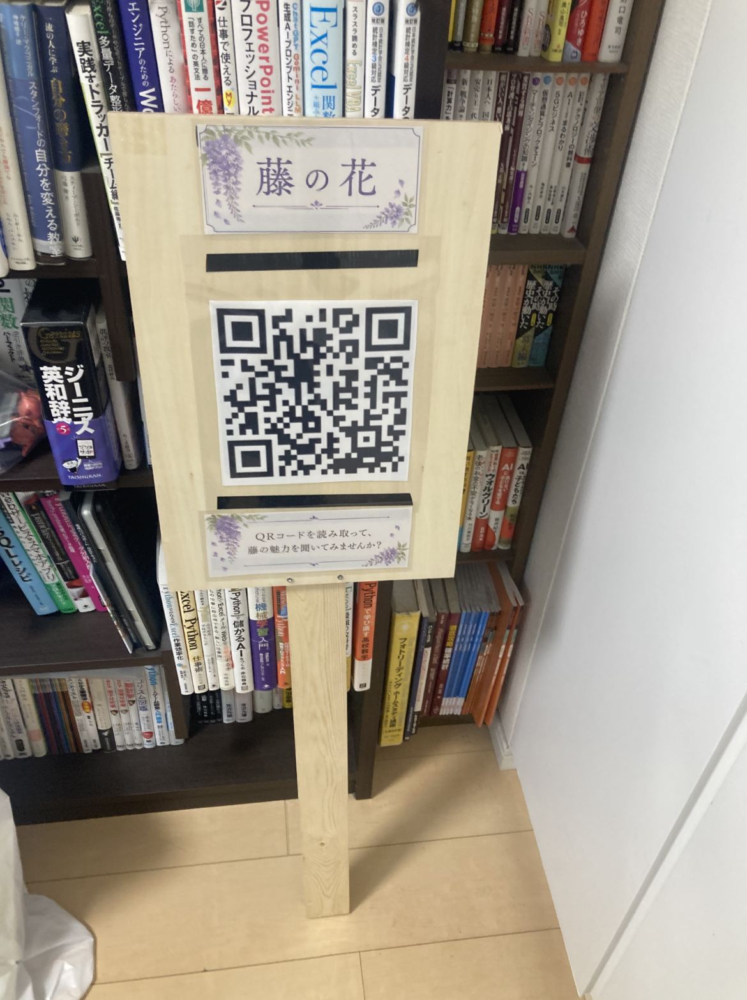

about me

山田 涼介
専修大学 ネットワーク情報学部
志望
Web制作やデジタル技術を活用し、 人と自然をつなぐサービス開発に関わりたい。
私はこんな人
日常の中にある不便や気づきをもとに、 技術を使って新しい体験を考えることに興味がある。 今回は万葉植物園を題材に、 QRコードと音声ガイドを用いた 「聞く植物園」を制作した。
中間発表会まで
作品のタイトルと概要
聞く植物園 ～QRコードがつなぐ、新しい自然との出会い～
万葉植物園にはさまざまな植物がある一方で、 植物や生き物についての説明が少なく、 初めて訪れた人が「何を見ればよいか分からない」 という課題があると考えた。
そこで、植物の近くに設置されたQRコードを スマートフォンで読み取ることで、 植物の特徴や豆知識を音声で聞ける 「聞く植物園」を提案した。
コンセプトは 「自然を主役にする技術」 である。スマートフォンの画面を見続けるのではなく、 音声を聞きながら実際の植物を観察してもらうことで、 自然への興味を深めることを目指した。
アクタントマップ

アクタントマップでは、来園者、植物、QRコード、 音声ガイド、スマートフォンなどの要素が、 どのように関わるかを整理した。
自然について知ることで来園者に興味を持ってもらえる一方、 大きな案内板やスピーカーを設置すると、 植物園の景観を損なったり、 動物への負担になったりする可能性がある。
そのため、小さなQRコード付き看板と 個人のスマートフォンを利用することで、 自然環境への影響を抑えながら、 植物について知ることができる仕組みを考えた。
中間発表会までのスケジュール
| 時期 | 行ったこと |
|---|---|
| 2026年4月8日 | オリエンテーションを受け、 万葉植物園の特徴や授業の目的を確認した。 |
| 2026年4月22日 | 植物園の課題を整理し、 アクタントマップを作成した。 |
| 2026年5月13日 | QRコードと音声ガイドを利用した 「聞く植物園」の企画を具体化した。 |
| 2026年5月27日 | 紙を使った試作と、 スマートフォンで表示する 植物紹介ページのプロトタイプを制作した。 |
| 2026年6月上旬 | HTML、CSS、JavaScriptを使い、 ウメ、サクラ、ハギの紹介ページを制作した。 |
| 2026年6月上旬 | GitHub PagesでWebページを公開し、 QRコードからアクセスできるか確認した。 |
| 2026年6月17日 | QRコード付き看板とポスターを展示し、 中間発表を行った。 |
中間発表会までに行った実験や作業
1．植物紹介Webページの制作
HTML、CSS、JavaScriptを使って、 植物の名前、特徴、開花時期、豆知識などを 表示するWebページを制作した。
音声ガイドの再生ボタンも実装し、 利用者が画面を見続けなくても、 植物について知ることができるようにした。
2．QRコード画像の作成と調整

植物紹介ページのURLをもとにQRコードを作成した。 QRコードは黒いドットと白い背景を使用し、 スマートフォンから読み取りやすい状態になるようにした。
また、印刷した場合でも読み取りやすくなるように、 画像の大きさや余白を調整し、 PNG形式で保存した。
3．GitHub PagesでのWebページ公開

制作した植物紹介ページを、 GitHubのリポジトリへアップロードした。 リポジトリにはトップページのほか、 ウメとサクラの紹介ページを保存した。
GitHub Pagesを利用してWebページを公開し、 パソコンだけではなく、 スマートフォンからもアクセスできる状態にした。
4．スマートフォンでの動作確認
作成したQRコードをスマートフォンで読み取り、 正しい植物紹介ページが表示されるか確認した。
また、ページの文字や写真が小さすぎないか、 音声ガイドが再生できるか、 QRコードからページが開くまでに 問題がないかを確認した。
5．QRコード付き木製看板の試作
植物園の自然な景観になじむように、 木材を利用したQRコード付き看板を制作した。
実際に植物の近くへ設置することを想定し、 QRコードが見つけやすく、 スマートフォンで読み取りやすい位置になるように 看板の形や高さを検討した。
中間発表会の成果物

中間発表会では、聞く植物園の企画を説明するポスター、 QRコード付き木製看板、 植物紹介Webページ、 スマートフォンによる体験デモを展示した。
- 企画のコンセプトを説明するポスター
- 植物紹介ページにつながるQRコード
- 梅をイメージしたQRコード付き木製看板
- ウメ、サクラ、ハギの植物紹介Webページ
- 音声ガイド機能
- スマートフォンによる体験デモ
発表では、実際にQRコードを読み取り、 植物紹介ページを開いて音声ガイドを聞く流れを 体験してもらった。
発表を見た人からは、 「QRコードから音声を聞ける点が分かりやすい」 「音声ガイドという特徴をさらに深めるとよい」 「看板を植物の形にすると面白い」 などの意見を得ることができた。
最終発表会まで
作品のタイトルと概要
聞く植物園 ～QRコードがつなぐ、新しい自然との出会い～
「聞く植物園」は、万葉植物園を訪れた人が植物をより身近に感じられることを目的とした作品である。
植物園には多くの植物があるが、説明板だけでは魅力が伝わりにくく、 説明を読まずに通り過ぎてしまう人も少なくない。 そこで、植物の近くにQRコード付きの木製看板を設置し、 スマートフォンで読み取ることで植物の写真や特徴、 万葉集との関わり、音声ガイドを閲覧できるWebページへ アクセスできる仕組みを制作した。
今回の作品では、 「自然を主役にする技術」 をコンセプトとし、 木製看板や個人のスマートフォンを利用することで、 植物園の景観を損なわず自然を楽しめる体験を目指した。
最終発表会までのスケジュール
| 授業週 | 内容 |
|---|---|
| 第10回（6月17日） | 中間発表会を実施し、 QRコードによる音声案内や作品全体について 来場者・教員からフィードバックを受けた。 |
| 第11回（6月24日） | 中間発表で得た意見を整理し、 木製看板・Webページ・ポスターの改善内容を検討した。 |
| 第12回（7月8日） | QRコード付き木製看板を製作し、 Webページや音声ガイドを改善した。 |
| 7月中旬 | QRコードの読み取りテスト、 スマートフォン表示確認、 音声再生確認を実施した。 |
| 第13回（7月22日） | 最終発表用ポスター、 木製看板、 Webページ、 プロジェクトロゴを完成させ、 最終発表会で展示した。 |
最終発表会までに行った実験や作業
① 中間発表で得た意見をもとに改善
中間発表では、 「QRコードから音声を聞ける点が分かりやすい」 という評価を得た一方、 音声ガイドの特徴をさらに深めることや、 看板のデザインを工夫するとよいという意見をいただいた。
そのため、 Webページだけでなく、 看板の素材やサイズ、 屋外での使いやすさについても改善を行った。
② QRコード付き木製看板の製作

木材を組み合わせて実際に屋外へ設置することを想定した QRコード付き看板を製作した。
QRコードが読み取りやすい位置になるよう調整し、 木製にすることで植物園の景観にも馴染むデザインとした。
③ Webページの改善
最終発表では藤の花のページを追加し、 写真・特徴・学名・開花時期・万葉集との関わり・ 音声ガイドを掲載した。
スマートフォンでも読みやすいよう、 レイアウトや文字サイズも改善した。
④ QRコード・音声ガイドの動作確認
スマートフォンを用いて QRコードが正常に読み取れるか確認した。
また、 Webページの表示や音声ガイドが 問題なく再生されることも確認した。
⑤ 最終発表用ポスターの制作

コンセプト、 アクタントマップ、 実現方法、 体験の流れ、 実装結果、 今後の改善を1枚にまとめた。
写真や図を多く使用し、 短時間でも作品の内容が伝わる構成を意識した。
完成版
聞く植物園
「QRコードがつなぐ、新しい自然との出会い」
「聞く植物園」は、万葉植物園を訪れた人が、 植物について気軽に知り、実際の植物をより注意深く観察できるようにする作品である。
植物の近くに設置された木製看板のQRコードを スマートフォンで読み取ると、植物紹介Webページが表示される。 Webページでは、植物の写真、特徴、開花時期、 万葉集との関わりなどを確認できるほか、 音声ガイドを聞くことができる。
コンセプトは 「自然を主役にする技術」 である。スマートフォンの画面を見続けるのではなく、 音声を聞きながら目の前の植物を観察することで、 自然そのものへの興味を深めることを目指した。
システム構成図

植物の近くに設置された木製看板には、 植物紹介Webページへ接続するQRコードが掲載されている。 来園者がスマートフォンでQRコードを読み取ると、 GitHub Pagesで公開された植物紹介ページへアクセスできる。
植物紹介ページには、植物の写真や基本情報、 万葉集との関わり、音声ガイドを掲載した。 音声を再生することで、利用者はスマートフォンの画面から目を離し、 実際の植物を見ながら説明を聞くことができる。
WebページはHTML、CSS、JavaScriptを使用して制作し、 GitHubでファイルを管理している。 大型の機械やスピーカーを設置せず、 利用者自身のスマートフォンを使用することで、 植物園の自然環境や景観への影響を抑えた。
フィールドに設置した様子

完成したQRコード付き木製看板を、実際に万葉植物園へ設置した。 看板には「藤の花」という植物名と大きなQRコード、 「QRコードを読み取って、藤の魅力を聞いてみませんか？」 という案内文を掲載した。
木材を使用したことで周囲の木々や植物になじみ、 植物園の景観を大きく損なわない展示にすることができた。 また、QRコードを大きく配置し、 少し離れた位置からでも見つけやすいようにした。
実際に設置したことで、QRコードの大きさだけではなく、 看板の高さ、角度、植物との距離によって、 読み取りやすさが変化することが分かった。 現地でスマートフォンを使って確認し、 Webページの表示と音声再生が正常に行われることを確認した。
最終発表会で展示した様子

最終発表会では、QRコード付き木製看板、 企画内容を説明するA3ポスター、 植物紹介Webページ、音声ガイドを展示した。
発表では、「聞く植物園」を制作した背景、 QRコードから音声を聞くまでの流れ、 木製看板やWebページで工夫した点を説明した。 来場者には実際にQRコードを読み取ってもらい、 藤の花の紹介ページと音声ガイドを体験してもらった。
- QRコード付き木製看板
- 藤の花を紹介するWebページ
- 植物について説明する音声ガイド
- 最終発表用A3ポスター
- GitHub Pagesで公開したWebサイト
- スマートフォンによる体験デモ
活動の意義
万葉植物園にはさまざまな植物がある一方で、 植物について詳しく知らない来園者は、 何に注目すればよいか分からないまま 通り過ぎてしまうことがある。
また、長い説明文が設置されていても、 読むことに興味を持てなかったり、 文章を読むことが苦手だったりする人には、 十分に情報が伝わらない可能性がある。
そこで、QRコードと音声ガイドを組み合わせることで、 子ども、外国人、初めて植物園を訪れる人など、 幅広い利用者が植物について知るきっかけを作ることを目指した。
QRコードを自分で読み取るという行動を取り入れることで、 一方的に情報を与えるのではなく、 利用者が能動的に植物について学べる体験を設計した。
利用の流れ
- 植物の近くに設置されたQRコード付き木製看板を見つける。
- スマートフォンのカメラでQRコードを読み取る。
- GitHub Pagesで公開された植物紹介ページを開く。
- 植物の写真や特徴、万葉集との関わりを確認する。
- 音声ガイドの再生ボタンを押す。
- 音声を聞きながら、実際の植物の形や色を観察する。
藤の花の紹介ページは、以下のリンクからも確認できる。
工夫した点
1．音声を聞きながら植物を観察できる設計
最も工夫した点は、スマートフォンの画面だけを見る体験にしなかったことである。 音声ガイドを用意することで、 利用者が画面から目を離して植物を観察できるようにした。
2．植物園の景観になじむ木製看板
プラスチックや金属ではなく木材を使用し、 自然の中に設置しても目立ちすぎないデザインにした。 植物名の部分には藤の花をイメージした装飾を加えた。
3．大きく読み取りやすいQRコード
QRコードは看板の中央に大きく配置し、 スマートフォンを近づけすぎなくても 読み取れるようにした。
4．利用方法が分かる案内文
QRコードだけを掲載するのではなく、 「QRコードを読み取って、藤の魅力を聞いてみませんか？」 という案内文を追加した。 これにより、QRコードの目的が一目で分かるようになった。
5．スマートフォンに対応したWebページ
植物園ではスマートフォンからアクセスすることを想定し、 写真や文章、音声再生ボタンが小さくなりすぎないように レイアウトを調整した。
最終発表で得られたフィードバック
最終発表では、実際に来場者へQRコードを読み取ってもらい、 作品についての意見や感想をいただいた。
「QRコードで簡単に利用できるため、 子どもや外国人、初めて来園する人にも利用しやすい」
「QRコードから簡単に情報を得られ、 音声ガイドがある点も面白い」
「文章を読むことが苦手な人でも、 音声による説明なら植物に興味を持ちやすい」
「QRコードを見ると読み取りたくなる心理が働くため、 利用者が能動的に学べる仕組みになっている」
「音声ガイドがあることで、 植物園をより楽しむことができる」
これらの意見から、QRコードの手軽さ、 音声による分かりやすさ、 利用者が自分から行動する体験設計が、 「聞く植物園」の強みであることが分かった。
成果
企画立案からプロトタイプ制作、中間発表、 改善、実装、最終発表までを行い、 実際に利用できる作品として完成させることができた。
- 植物紹介Webページを制作し、GitHub Pagesで公開した。
- QRコードからスマートフォンでアクセスできるようにした。
- 植物の説明を聞ける音声ガイドを実装した。
- 植物園の景観になじむ木製看板を制作した。
- 実際のフィールドへ看板を設置して動作確認を行った。
- 最終発表で来場者に体験してもらい、評価を得た。
特に、Webページだけで終わらず、 実際のフィールドに看板を設置して、 QRコードの読み取りや音声再生まで確認できたことが 大きな成果である。
制作を通して学んだこと
今回の制作を通して、Webページを制作する技術だけではなく、 実際に利用する人の行動を考えて設計することの重要性を学んだ。
屋外へ設置する場合は、 QRコードの大きさやWebページの見やすさだけでなく、 看板の高さ、角度、設置場所、植物との距離、 雨や風への対策なども考える必要がある。
また、中間発表や最終発表で他者から意見を得ることで、 自分だけでは気づかなかった作品の強みや改善点を 発見できることも学んだ。
改良への考察
今回は藤の花を中心に完成版を制作したが、 今後は次のような機能や内容を追加することで、 より多くの人が利用できる作品へ発展させたい。
- ウメ、サクラ、ハギなど、対応する植物を増やす。
- 日本語だけでなく英語などの多言語音声を追加する。
- 短い音声と詳しい音声を選択できるようにする。
- 季節によって変化する植物の写真や情報を追加する。
- QRコードの読み取り回数を記録する。
- 利用後のアンケートや感想を送信できるようにする。
- 雨や紫外線に強い屋外用の印刷・保護方法を採用する。
これらの改善を行うことで、 子ども、外国人、植物に詳しくない人など、 より幅広い来園者が自然観察を楽しめるサービスに 発展させることができると考えている。